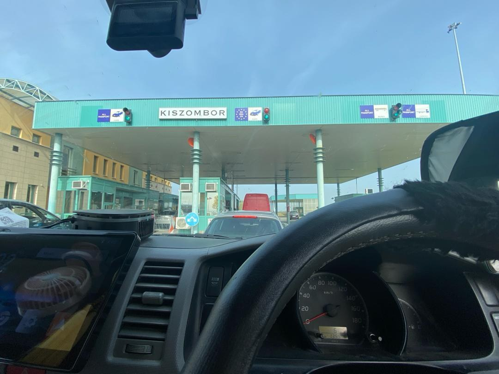
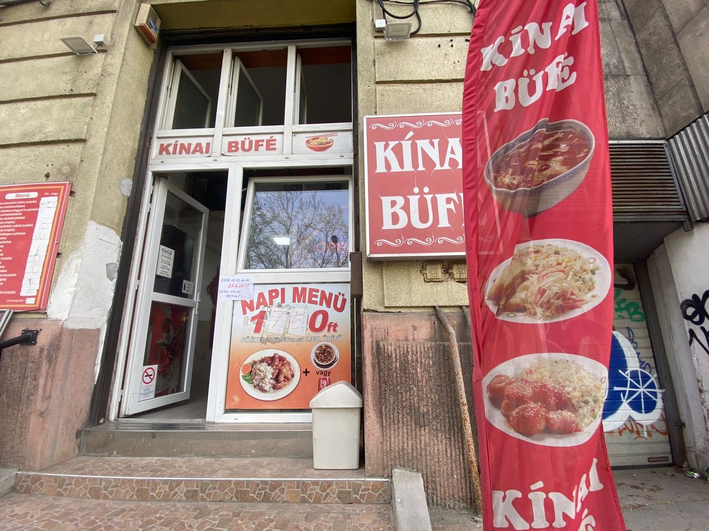
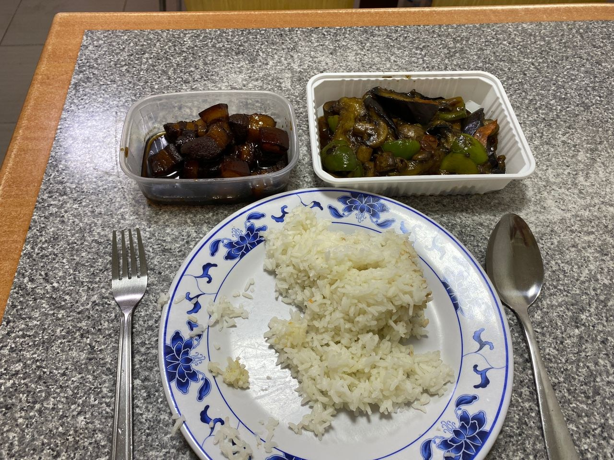
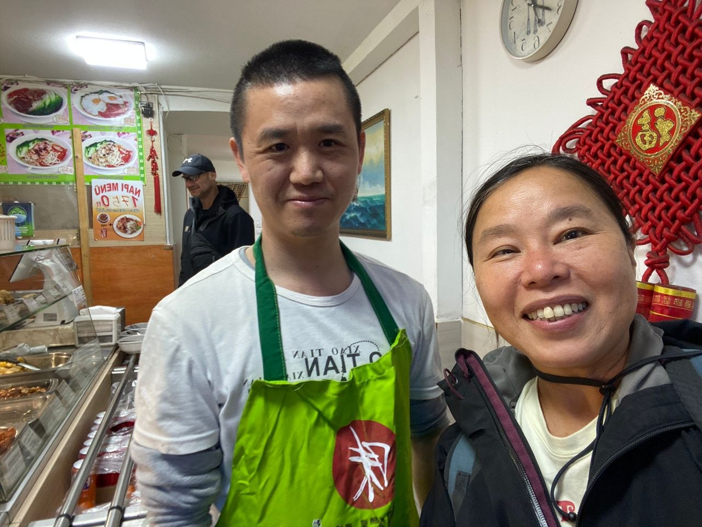

Real Story · 中文
Hungary opened with flags inside Toyotaki.
1 April and 2 April 2024，我 overnight at Budapest, Hungary free parking lot。 Toyotaki 车内的国旗继续飘着， 一路从 Romania 进入 Hungary。
每多一个国家，车内就多一段记忆。 那些小国旗不是装饰而已， 是 Toyotaki 和我一起走过来的路。

Chinese Buffet
中國人在匈牙利的布達佩斯開飯店。
在 Budapest，我看到一家 Chinese buffet。 中国人在 Hungary 的 Budapest 开饭店， 我中午就进去吃。
对长途旅行的人来说， 能吃到接近熟悉味道的饭菜， 身体会有一种很直接的安心感。


Kindness
老板请我傍晚去吃他们的住家晚餐，免费。
今天中午上他那吃饭， 老板后来请我傍晚去吃他们的住家晚餐。 免费。
在一个陌生城市，被人这样请去吃晚餐， 那种感恩很难用一句话讲完。 有时候 road life 最温暖的不是景点， 是突然有人把你当成客人，也当成自己人。

English Memory Summary
Hungary opened with parking, food, kindness, and a long taxi.
On 1 and 2 April 2024, Tuzi overnighted at a free parking lot in Budapest, Hungary. Inside Toyotaki, small country flags continued to mark the journey’s progress.
In Budapest, she found a Chinese buffet run by Chinese people. After eating lunch there, the owner invited her to join their home dinner in the evening for free. It became one of those unexpected kindness moments on the road.
After Budapest, the journey would continue toward Slovakia.
Heart Statement
有些国家的第一扇门，是一碗饭和一个陌生人的邀请。
Hungary opened with free parking, a Chinese buffet, and an invitation to dinner before Slovakia.